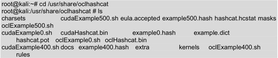
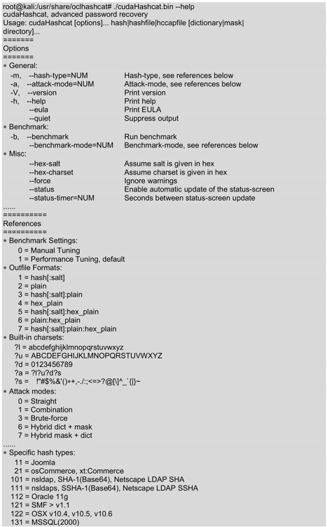
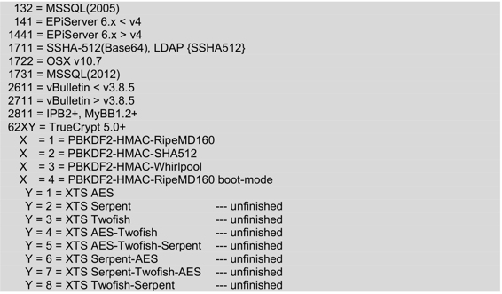

8.8 使用NVIDIA计算机统一设备架构（CUDA）
CUDA（Compute Unified Device Architecture）是一种由NVIDIA推出的通用并行计算架构，该架构使用GPU能够解决复杂的计算问题。它包含了CUDA指令集架构（ISA）及GPU内部的并行计算引擎。用户可以使用NVIDIA CUDA攻击使用哈希算法加密的密码，这样可以提高处理的速度。本节将介绍使用OclHashcat工具攻击密码。
使用OclHashcat工具之前，一定要确定当前系统已正确安装了NVIDIA显卡驱动。在Kali中，OclHashcat默认安装在/usr/share/oclhashcat目录中。所以需要先切换目录到OclHashcat，再启动OclHashcat工具。执行命令如下所示：

以上输出结果显示了OclHashcat目录下所有的文件。其中，cudaHashcat.bin可执行文件是用于破解密码文件的。在使用该可执行文件之前，先查看下它的帮助文档。执行命令如下所示：

输出的信息显示了cudaHashcat.bin命令的语法格式、可用选项及配置例子等。
了解cudaHashcat命令的语法及选项后，就可以指定要破解的密码文件了。执行命令如下所示：
root@kali:~# ./cudaHashcat.bin attackfile -1 ?l?u?d?s ?1?1?1?1 ?1?1?1?1
下面对以上命令中的各参数将分别进行介绍，如下所示。
- ./cudaHashcat.bin：表示调用cudaHashcat命令。
- attackfile：指的是攻击的文件。
- -1 ?l?u?d?：表示指定的一个自定义字符集。该选项指定的字符集可以是小写字母、大写字母和数字。
- ?1?1?1?1：表示使用字符集唯一的左掩码。
- ?1?1?1?1：表示使用字符集唯一的右掩码。